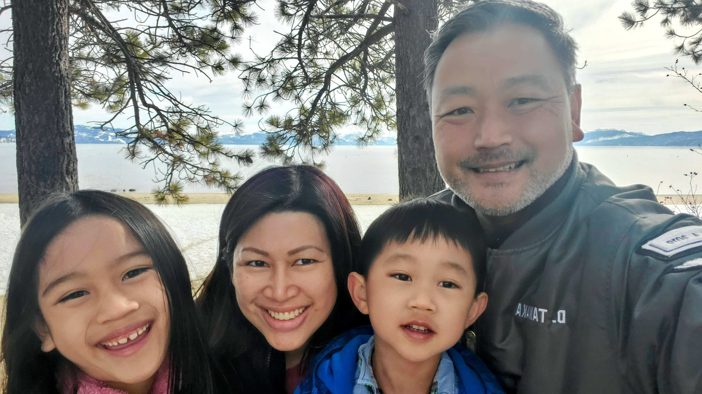
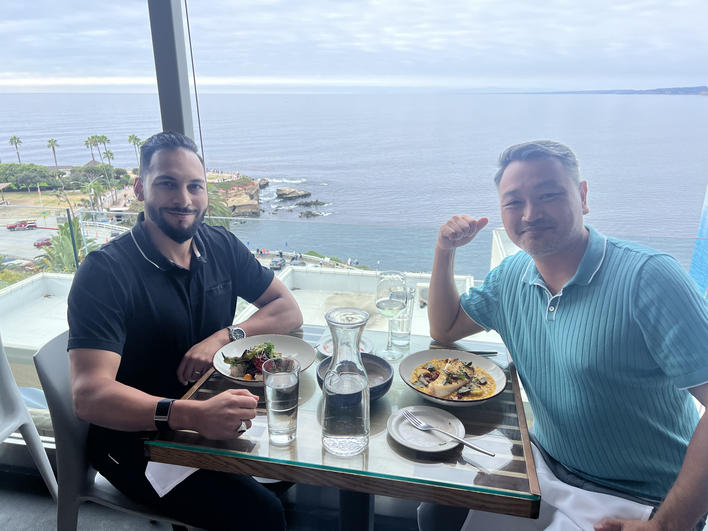
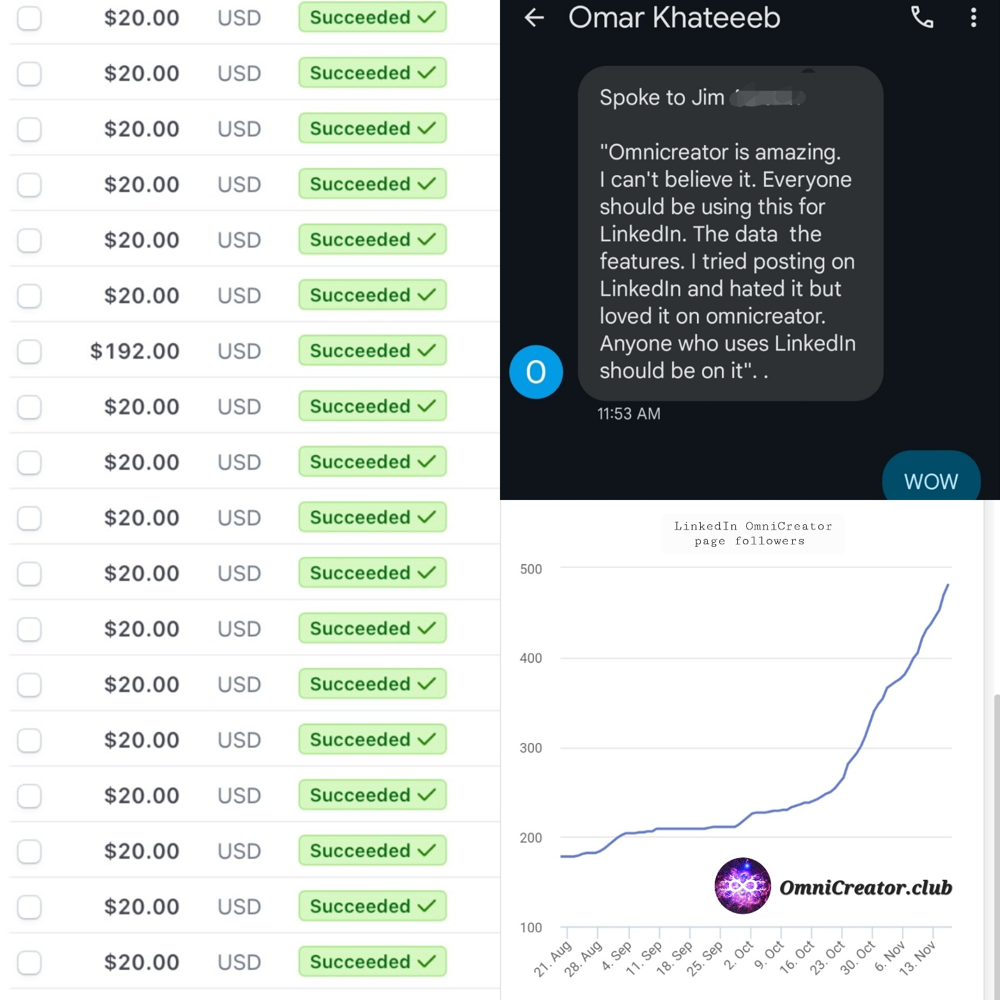

48歳

今年も無事に誕生日が過ぎました。 とは言っても、11月に坐骨神経痛を悪くしてしまい、好きなハイキングやジョギングも休んで治療に専念する年末となりました。 ベッドで腰を休めながらこの日記を書いています。
今回はソロプレナーとスケーラブルライフスタイルビジネスについて、経験をシェアしたいと思います。
親友と新会社設立
今年、仕事で一番の出来事は友人のオマールと新しい製品を作って会社を設立したことだ。

と言っても、9月にほぼ即決で作った会社。 年初には影も形もなかったものが、あれよあれよと言う間に出来あがった経緯を整理してみたい。
エンジニアの私とマーケティング専門のオマールとが組んでプロジェクトをしようと約束したのが一年前。 オマールは私に感化されて独立起業して、ビジネスが軌道に乗ったところだった。 ソロプレナーという言葉がある。ソロと起業家を意味するアントレプレナーを繋げて、一人で起業経営する我々を指す言葉だ。 オマールも私もソロプレナー。別の専門分野で独立して稼ぎがある二人が協力すると何ができるかという実験だ。 私が作って、彼が売る。
会社の名前はTwo Sea Lions Inc. (二頭のアシカ株式会社)。 私が思いつきでつけた。 上の写真は夏の終わりにサンディエゴにオマールを訪ねたときのもの。 ラホヤビーチを見下ろすGeorges at the Coveというレストランで食事をしていると、海岸に大きなアシカが近くのダイバーや海岸の観光客を気にせず優雅に岩で寝そべっていた。 その我関せずという姿をソロプレナーとして悠々自適にやっている二人と照らし合わせた。 それがTwo Sea Lionsの由来だ。
個人ブランドとソーシャルセリングの波に乗る
Two Sea Lionsとして発足する前、私とオマールはリンクトイン上で信頼されるプロフェッショナルになるためのツールとコミュニティの提供する、オムニクリエーター(OmniCreator.club)という会員制サービスを作った。
アメリカのソロプレナーが顧客を開拓して売上につなげる大事なソーシャルネットワークがリンクトイン。 リンクトインを中心に、ソーシャルセールスという手法が、ソロプレナーだけでなく大企業のマーケティングやセールスでも大事なキーワードとなりつつある。 その際に重要となるのは、個人アカウントからの情報発信だ。 これは昨年末のニュースになるが、IT大手のシスコは8万4千人の社員にリンクトインで情報発信をする研修を始めたと発表して話題になった。 企業ページからの情報発信よりも、社員の個人アカウントからの発信の方が共感を呼び伝播しやすいということが段々と認知されてきたのだ。
オマールは医療デバイス営業の分野で3万4千人のリンクトインフォロワーを持っている。私はエンジニアリング分野でその10分の1のフォロワー。 彼も私も毎日、フォロワーに役立つ情報や個人のストーリーを投稿している。 繋がった人のタイムラインに毎日プロフィール顔写真と名前を登場させ、専門分野の話題を提供することで、2つの効果がある。 一つは、既存の顧客への挨拶効果。もう一つは、潜在顧客の頭の中で、専門分野・キーワードと我々の顔と名前を関連付けてもらうのだ。
リンクトインユーザーのタイムラインはいろいろな投稿が溢れている。 だからスクロールする指を止めるような引き立つコンテンツを作る必要がある。 個々のリンクトイン投稿は高だか全フォロワーの10%程度にしか届かない。 だから同様のメッセージを毎日繰り返して発信する必要がある。 注意を引き、皆の役立つコンテンツを毎日スケジュールするツールをOmniCreatorが提供する。
個人がリンクトインに投稿する目的も様々だ。 専門分野で有名になることで、就職・転職を有利にしたり、教育コンテンツを売ったり、コンサルタントとして独立したり。 また、リンクトインでネットワークを広げ営業活動に役立てるセールスプロフェッショナルもいる。 士業やお医者さんが自分のブランドを高める目的で使っている場合もある。 オムニクリエーターは、コンテンツ作成ツールとして始まったが、同じ目的で頑張っている同士がサポートし合うコミュニティとして成長している。 “Come for the tool, stay for the network.” (ツールが目的で来たが、ネットワークが故に居続ける)というオンライン製品開発の格言がある。 これをコミュニティという形で実現したい。
製品の誕生から課金化まで
アメリカで博士号を取り、大企業で働いて、スタートアップでゼロから製品を作り、独立した私は、デジタル製品のアイディアを得て形にする手法の一通りが頭に入っている。 定石といった立派なものではなく、自分だったらこうするという我流そのものだが、手順をまとめてみようと思う。
エンジニアの私がデジタル製品を作る大まかな流れを書くと、
- 自分が欲しい物を作る
努力を無にしたくないので自分が使うものを作ってみる。 作業を効率化するのに既存のツールがなかったり、既存の製品に満足行かなかったりした場合にアイディアが出る。 この段階では自分さえ使いこなせれば良い。 自分のために作れば、ここでプロジェクトが止まってしまっても、役に立つものを自分で作った満足感と、そこから得られた学びが残るだろう。
- 友人に使ってみてもらう
人に使ってもらうとなると、ウェブアプリの形にしたり、アカウントを作ってログイン可能にする必要がある。 苦心して他人も使えるようにして、いざ友人に紹介する。 ほとんどの友人はいいねと言ってくれるが信じてはいけない。 いいねと言いつつ、繰り返し使ってくれないというところに本音があるのだ。 だから誰がいつ使ってくれているかはしっかりと計測する。 サインアップから、作業完了、価値を実現するまでに要した時間も計測する。
自分と同じようなニーズを持っている人はどこにいるのか、どんな人が使ってくれるのか。 そして、ソフトウェアを直感的にデザインしたつもりでも、説明しないと使いこなせない部分がたくさんあることを発見する。 自分以外の人に使ってもらえるだけの完成度に高めるのはステップ１の何倍も労力が必要なことを思い知る。
- 初期の無料ユーザーを募る
ステップ２で得たフィードバックを元に問題点やバグを全部潰してから、さらに多くの人に声をかける。 無料と言っても、評判も何もない製品に、人さまの時間を頂戴して試してもらっていることを忘れてはいけない。
この段階では、友人以外でも理想の顧客となりそうな人を見つけて試してもらう。 だから、自己紹介して、何に役立つものなのかを簡潔に伝えなければいけない。 ステップ２と同様に利用状況を計測するとともに、使用感を聞いて改善できる部分はスピーディーに対応する。 Eメールやチャットなどユーザーの興味が失われないように対話と対応に努め、好感を持ってもらう。 そうして少数のファンを獲得できたら、お客様の言葉としてサイトに紹介させてもらう。
- 課金開始
ユーザーを獲得して、アカウントを管理するのに必要なコストを計算する。 そのコストをカバーして利益が出なければ商売として成り立たない。 コストを下げるのは可能なのか。 もしくは更に価値をあげてもっと高い利用料を取れるようにするのか。 他の類似商品は幾らでやっているのか。 ターゲットの客層を絞って、高級感をだして値段を上げることはできるのか。 それらを勘案して課金形態と値段を決めて、有料ユーザーを募ってみる。
この時点でも、広告や派手なローンチはせずに、せいぜい数十人のユーザーを足で探して、ステップ３のように対話と改善を続ける。 同時に表面的な機能を超えて、ターゲット顧客が願望する事とは何かを学び、それをコピーライティングに反映させる。 コピーを研ぎ澄まして、初期ユーザーからの喜びの声を提示しなければ、なかなか利用は伸びないものだ。 それが固まる前に広告を打っても課金まで行かずに失敗してしまう。 限定したユーザーでしっかりと完成度を高めてから、マーケティングと営業を広げるという順序をしっかりと守る。
- 継続課金を成功させる
オンラインツール、いわゆるSaaS(ソフトウェアアズアサービス)の場合、一ヶ月程度の無料期間を経て、顧客はクレジットカードを入力、毎月の支払いを始める。 最初の数ヶ月が大事なときで、この間に「やっぱり無駄」と感じて離反してしまったら失敗である。 メールやアプリ内のコンテンツを通じて、ユーザーの理解度に応じた価値をコミュニケートし続けなければいけない。
- 口コミを獲得する
一番効果的な営業は顧客の口コミだ。 完成度の高い製品と素晴らしいサポートで、顧客に愛されることだ。 愛してくれる顧客は、同じようなタイプの人を知っている。 そういう人との話で話題に乗せてもらえるようにお願いする。 また、紹介による利用料還元やアフィリエイトなどの制度で紹介のインセンティブを作る。
漁場を選ぶことも重要だ。 最初からマーケット全体を相手してもうまく行かない。 特定の国、業種、職業、年代など共通点を持つ人々が集まって会話をしている場所を見つけて集中的に攻めることが効果的だ。 なぜなら小さな括りのグループ内で、影響力の強い人が使っていたり、多数が使っていたりすると、「では私も」となりやすいからだ。
スケーラブル ライフスタイル ビジネス
以上のようなステップを焦らず丁寧に進めてきたことで、毎月の売上はまだ小さいながらも安定してきた。 製品のリンクトインページのフォロワーも増え、良い反響もたくさんもらった。

オマールと私は、それぞれ別のビジネスで収入を得ながら、オムニクリエーターという企画を人を雇わずに、限られた時間と最低限の予算だけで立ち上げた。 これからも外部資金を入れる必要はない。
我々が追求したいのは、スケーラブルライフスタイルビジネスだ。
ここ10年のクラウド環境の進化はめざましい。 フルスタックエンジニアが一人いれば新サービスの実験展開から課金化までできる。 今までのように、ベンチャーキャピタルやエンジェル投資家から資金を募って、人を雇ってようやく立ち上げという手順を踏まなくても作れるビジネスが増えた。 外部資金を入れず、コストを抑えて、課金可能性に初期から集中することで、無理せず自分のペースで事業を段々と大きくすることができる。
最低限必要なのは、作る人、売る人、顧客サポートをする人だけだ。 私は作れるけど、売るのが下手。幸い売る力で独立している親友オマールと組むことができた。 オマールと私はラホヤビーチのアシカのごとく、自分の家族や自分のライフスタイルを第一にしながら、自分の時間以上にスケールするビジネスを来年もゆっくりと作っていく。
2023年はチャットGPTを通じて生成AIが一般人の創造活動を加速しはじめる元年となった。 人間一人が監修役となって、AIがプログラミングをしたり、マーケティングをする。 そのような未来ももう来ている。 スケーラブルライフスタイルビジネスを成功させる土壌は固まった。 2007年から15年続いた、大規模資金調達をともなったスタートアップブームの代替スタイルとして、スケーラブルライフスタイルビジネスで成功する人が増えると考えている。
これまでの誕生日日記：